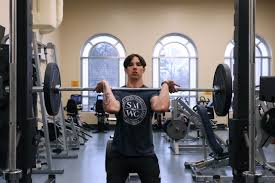
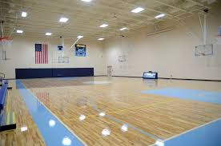
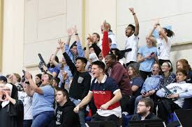
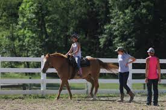
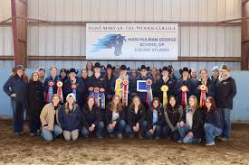
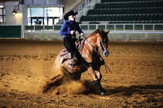
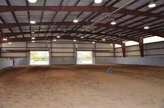

Welcome to Our Athletics Page
A lot of the community around campus is built through our athletic programs and competitions. Here at SMWC we have 16 varsity teams competing in various sports throughout the year. These teams represent our school with pride and dedication. Not only do they compete at a high level, but they also serve as role models for the broader student body. Within their teams and outside of their teams they are able to build community. As athletes at SMWC, they exemplify the values of hard work, teamwork, and perseverance, representing who we are as a school in whole.
One of the best aspects of our athletic program is game day atmosphere and the sense of school spirit that it creates. Teams here at SMWC support one another and show pride in their school. Even if you are not an athlete, you can still participate in the school spirit and support your friends by attending the games.
CLICK HERE to visit our official athletics website
Workout Center

Strength training at the gym.
Also known as Club 64. This is open to all students. The gym community is very uplifting as everyone in there is working to improve their fitness and overall health.
This fitness center has cardio and strength equipment for all fitness levels as well as free wifi to use.
Main Gym

Gym where indoor games are played.
Knoerle Gym is a state-of-the-art facility that provides a great environment for students to stay active and engaged in physical activity. There are two gyms available. Sports teams have main priority acess to them, but anyone else is welcome during periods when they are not in use.
Whether you are an athlete or a fan you can make great memories here.
Pomeroy Fan Section

SMWC Student Section is a highlight to this campus and facility.
Cheering on our teams during big games is always a fun experience. You can show your support and create a great atmosphere for the players.
Be sure to go to home games to show your support! Senior night is when it is the last home game for a team and they take the time to appreciate the seniors. This is one of many memorable moments that can take place.
Located in the Jeanne Knoerle Sports and Recreation Center is Club '64. Named after the Class of 1964, which donated the funds to build the Knoerle Center, Club '64 is a fitness center featuring cardiovascular equipment, strength equipment, functional athletic training, and free WiFi.
Love horses? Stop by the stables to see the horses on campus!
Besides horses there is also alpaca stables, chicken coops, and a nature trail that can be explored!
Take some time to walk around the stables and get a feel for the animals!




The SMWC eSports and Gaming Club is a vibrant and welcoming community of casual and competitive video gamers. The club prides itself on being a competitive, yet, relaxed environment for gaming enthusiasts of all levels. An eSports participant can hone on their independent competitive skills in preparation for tournaments within the club and against other collegiate teams.
Supporting Our Athletes When you support Pomeroy Athletics, you support our student-athletes. And, more importantly, you support the attainment of values like hard work, perseverance and pushing limits. Student-athletes gain an understanding of teamwork through shared experiences. They excel in the classroom. And they contribute to pride in SMWC. We want to support our students while they compete and reach their academic goals. We think they are worth the investment. Sounds like something you might want to give a high-five to? We have numerous ways you can support our athletes. Personal Giving The easiest way to support our student-athletes is to make a gift in support of the Pomeroy Athletics Program. Here, we will ensure your contribution goes toward the greatest need – which might be providing students with academic and athletic opportunities such as study tables, tutoring services or additional domestic and international travel experiences. Perhaps scholarships are more your style? Academics come first with our student-athletes and a gift here says you think so, too. Or, if you have a team whose efforts you want to support and prefer to designate your gift toward one of our 16 teams, we'd love to help make that happen. On the giving page, be sure to click the dropdown and specify "athletics" in the notes. A really easy way to let your student-athletes leave their physical mark on the building is to buy a brick with their name on it! Sold in increments of $250 and $1,000 you can create a new tradition of kissing the bricks for good luck! The Knoerle Campaign Saint Mary-of-the-Woods has experienced unprecedented growth in the last five years and now we need our athletic facilities to keep pace. The Knoerle Campaign will help us expand and grow even more by adding new women's and men's locker rooms, a classroom and common space. Read more about that initiative. Sponsorships Our Athletics Advancement team will work with you to put together a package that meets your business' needs. Your organization may naturally find a good fit with a specific team. Or perhaps you're looking for sponsorship of a particular facility or team? Want to be the presenting sponsor for the Pomeroy Athletics program? (Hey, we had to ask?) Either way, we'll put together options that fit your budget and marketing needs.